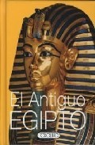

El Antiguo Egipto
Reseña por Jorge I. Zuluaga

Ver reseña en GoodReads (necesita cuenta)
Mi motivación original para comprarlo era que acababa de leer un texto mucho más completo y bien escrito (Auge y caída del antiguo Egipto de Toby Wilkinson, aquí mi reseña) que sin embargo, carecía de imágenes o fotografías que ilustraran las fantásticas historias del antiguo Egipto (un defecto que ahora reconozco en el muy bien escrito libro de Wilkinson). Solo quería "leer" (o simplemente "ojear") algo un poco más ligero y bien ilustrado para complementar esa extraordinaria lectura.
Con sorpresa descubrí un librito mejor escrito y con "más carne" egiptológica de lo que creía. Y aún mejor, ¡profusa y bellamente ilustrado!. Todo, empacado en 400 paginitas de media carta de muy buena calidad y a full color.
¡Una delicia!
Además le queda a uno como una interesante obra de consulta.
En pocas frases ¿de qué trata el libro?. El libro hace un recorrido por la historia del antiguo Egipto, desde el período predinástico hasta la conquista de los árabes en la alta edad media. Pero no se reduce solamente a la historia, a una descripción textual y gráfica de la sucesión de dinastías e invasiones de los 3500 años que cubre; en el intermedio se detiene para ilustrar aspectos de la cultura, el arte, la religión, la "ciencia" y la técnica del milenario pueblo egipcio. Todo, otra vez, profusamente ilustrado.
¿Cuál es más o menos la estructura del libro?. El libro viene divido en 11 partes (ej. El período de Amarna, La época grecorromana, de la época copta a la conquista de los árabes) a su vez divididas en capítulos de 10 a 15 páginas, una división muy adecuada para irlo leyendo de a poquito; esto lo hace un excelente texto para leer en filas de bancos y mesas de noche. La organización de los temas es excelente desde el punto de vista académico. No solo sigue un orden estrictamente cronológico, sino que los temas "satélite" se ajustan perfectamente a la época alrededor de la que se presentan.
Decime la verdad ¿qué es lo peor que tiene el libro?. Como sucede con muchos libros enciclopédicos, a veces da la impresión que lo único que le interesaba a los editores era poner imágenes y fotografías, más que crear un texto sólido pero también entretenido. Empece esta reseña justamente diciendo que este no era el caso con este librito, pero seguramente muchos de los que lo lean encontraran que sí hay apartes del libro en el que la "densidad" del texto no se corresponde bien con la "ligereza" de las ilustraciones. Solo por eso le quite una estrella.
¿Cuál es la mejor parte?. Dos cosas para resaltar. Me encanto la primera parte "Egiptomanía y Egiptología" donde resumen la historia de las investigaciones sobre Egipto desde la antigüedad hasta los gloriosos años de principios del siglo xx. Como soy nuevo en el tema, me encantó saber de y ver los dibujos y las fotos de los ídolos de la Egiptología de todos los tiempos. Muchos de ellos son citados en otros textos, así que resulto genial conocerlos. El otro elemento que resalto son las fotografías y las ilustraciones que están muy bien escogidas. Creo que una de los cosas que hace a Egipto tan fantástico es la inmensa colección de "imágenes" que en sus más de 3.000 años de historia nos legó y que en solo 150 años los egiptólogos han logrado desenterrar y restaurar con habilidad.
A Egipto se lo conoce por los ojos y este libro hace un gran trabajo en eso.
¿Algún datico curioso que me anime a leer el libro?. Siempre me han interesado las lenguas (a pesar de no tener aptitudes innatas para ellas), por eso me causo gran curiosidad leer sobre el surgimiento de la lengua Copta (copto es una deformación del vocablo griego Aegyptos). Esta lengua surgió en un período en el que ya la cultura y la religión Egipcia estaban en decadencia (ha. 300 e.c.). El Copto, que todavía se usa en la lengua litúrgica del cristianismo Copto de Egipto, se derivó, en parte, de la lengua Egipcia original (y eso es un decir porque del apogeo de la civilización faraónica en el imperio nuevo, habían pasado ya más de 1.500 años cuando se celebró la primera misa en esa lengua) de modo que ella guarda, como "fósiles lingüiticos", partes del idioma en el que habló la divina Hatshesupt o el gran Imhotep. ¡Eso me parece asombroso!
Cada vez más enamorado del antiguo Egipto y la historia, los datos y especialmente las ilustraciones de este libro no han hecho sino agravar mi condición.